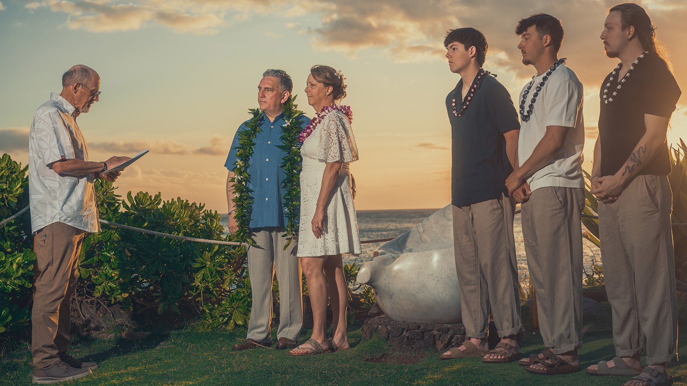
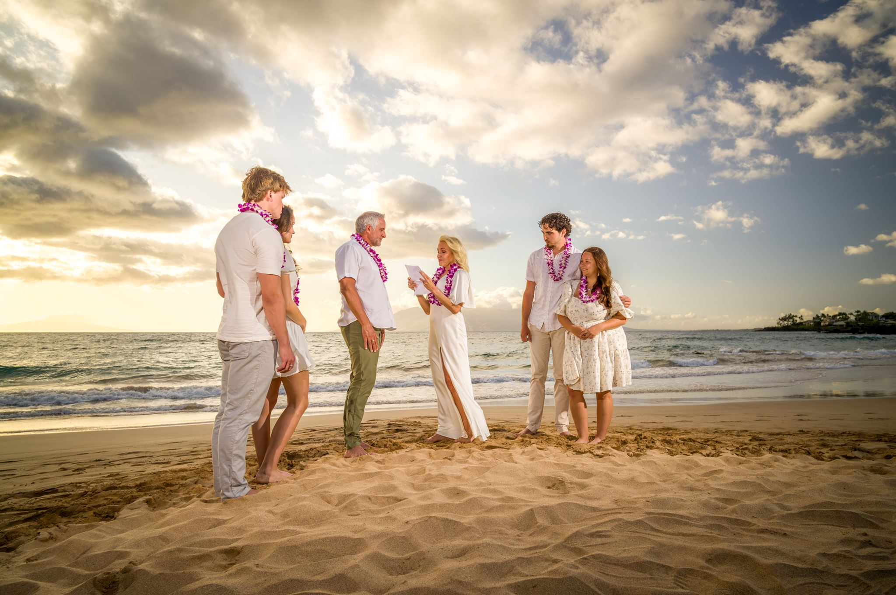
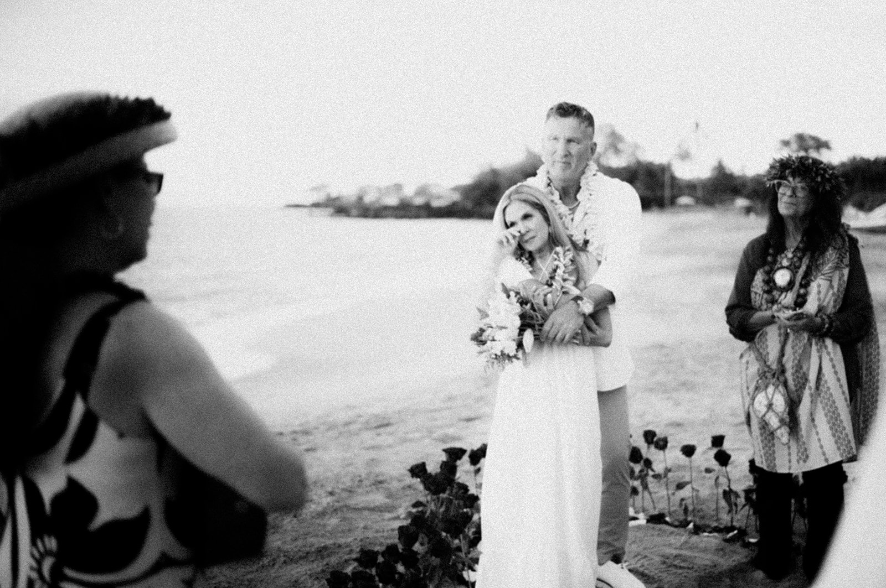

MAUI VOW RENEWAL PHOTOGRAPHY
Choose each other again.
A beautiful way to honor everything you have shared—and everything still ahead.
A NEW PROMISE IN MAUI
Your history deserves its own celebration.
A vow renewal can be quiet and private, surrounded by family, or part of an anniversary journey you have imagined for years. We photograph the ceremony and the connection around it with warmth, gentle direction and respect for what the moment means.
With more than 25 years on Maui, our family helps you choose light and scenery that feel worthy of the story you have built together.
Intimate or sharedCelebrate privately as a couple or include the children and family who became part of your story.
Simple local guidanceWe help with timing, beach conditions and a natural flow for the ceremony and portraits.
A complete new chapterProfessionally edited, high-resolution photographs with full print rights.



Years photographing the promises families carry through time.
Local · Family Run · Never Outsourced
CELEBRATE YOUR NEXT CHAPTER
Let Maui hold the moment.
Tell us about your anniversary, who will be there and what you imagine.
Plan Your Vow Renewal